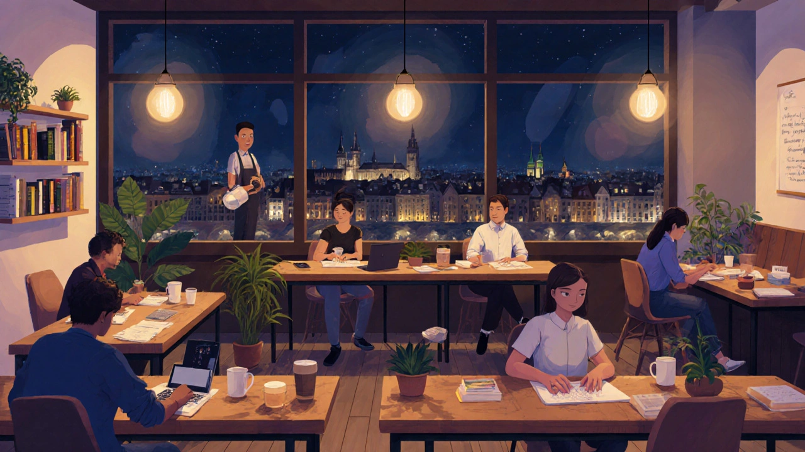

Časté dotazy
Na této stránce najdete odpovědi na otázky, které nám zákazníci kladou nejčastěji. Pokud tu svou odpověď nenajdete, napište nám na info@kavovykoutek.cz nebo zavolejte.
Mohu si kávu a jídlo objednat dopředu?
Ano. Přes stránku Objednávka a rezervace si vyberete položku, datum a čas vyzvednutí. Po odeslání formuláře se otevře váš e-mail a my vám objednávku potvrdíme.
Jak si u vás rezervovat stůl?
Postup je jednoduchý a trvá jen pár minut:
- Otevřete stránku Objednávka a rezervace a zvolte „Rezervovat stůl“.
- Vyplňte datum, čas a počet osob a doplňte své kontaktní údaje.
- Odešlete formulář – otevře se e-mail s připravenou žádostí, kterou nám pošlete.
- Do 24 hodin vám rezervaci potvrdíme e-mailem nebo telefonicky.
Přijímáte platby kartou?
Ano, platit můžete hotově i kartou. Terminál máme přímo u pokladny, takže nemusíte mít u sebe hotovost.
Máte nabídku pro alergiky nebo vegany?
Většinu nápojů umíme připravit s rostlinným mlékem (ovesné, mandlové). U jídla se zeptejte personálu – rádi poradíme s bezlepkovými a vegetariánskými možnostmi podle aktuální nabídky.
Kde nás najdete a jaká je otevírací doba?
Sídlíme na Vinohradské 127 v Praze 2. Níže je přehled otevírací doby. V neděli a státní svátky se doba může mírně lišit – aktuální informace vždy ověřte telefonicky.
| Den | Otevírací doba | Poznámka |
|---|---|---|
| Pondělí – pátek | 7:30 – 19:00 | Ranní káva od otevření |
| Sobota | 8:30 – 18:00 | Víkendový klidnější režim |
| Neděle | 8:30 – 18:00 | Stejně jako sobota |
| Státní svátky | dle oznámení | Sledujte e-mail nebo Facebook |
Jak vypadá interiér kavárny?
Preferujeme světlý a klidný prostor s dostatkem míst u oken. Níže ukázka z našeho interiéru – další fotografie najdete v galerii.
